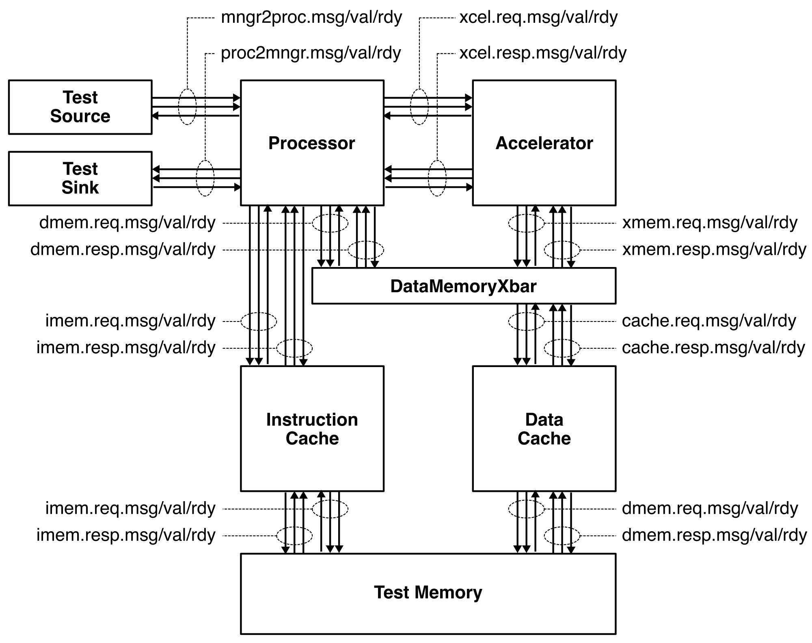
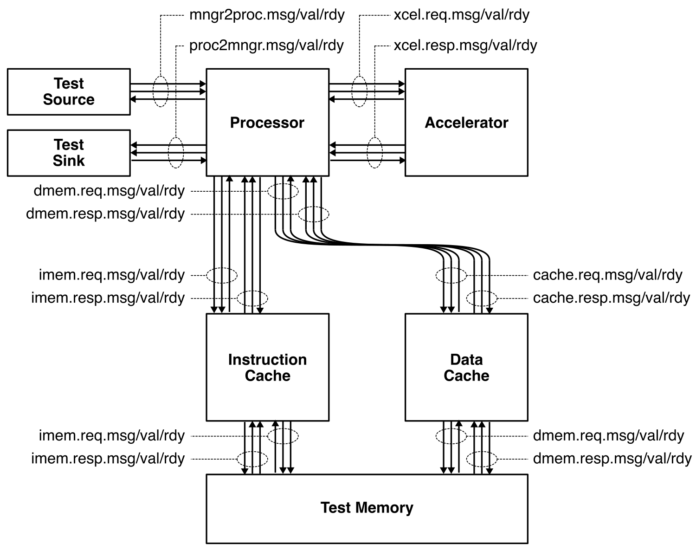
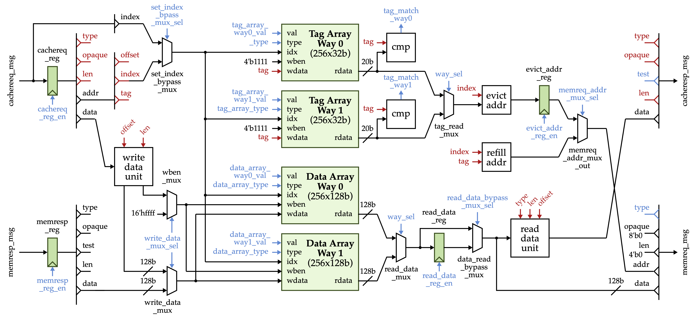
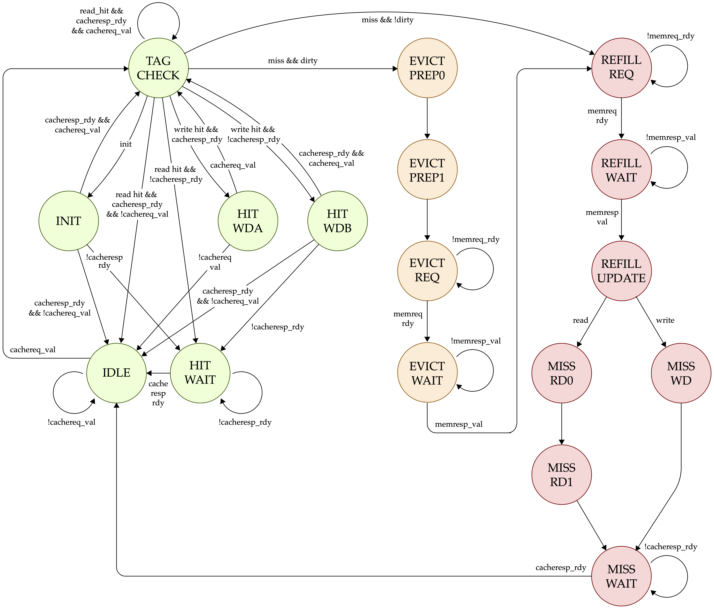
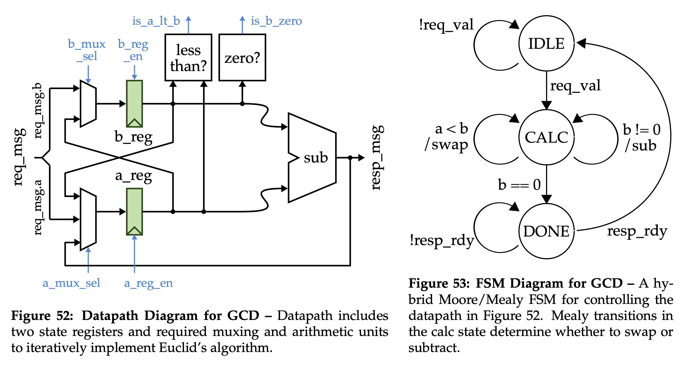

ECE 6745 Lab 5: TinyRV2 Accelerators
In this lab, we will be discussing how to implement a simple medium-grain accelerator. Fine-grain accelerators are tightly integrated within the processor pipeline (e.g., a specialized functional unit for bit-reversed addressing useful in implementing an FFT), while coarse-grain accelerators are loosely integrated with a processor through the memory hierarchy (e.g., a graphics rendering accelerator sharing the last-level cache with a general-purpose processor). Medium-grain accelerators are often integrated as co-processors: the processor can directly send/receive messages to/from the accelerator with special instructions, but the co-processor is relatively decoupled from the main processor pipeline and can also potentially independently interact with memory.
This diagram illustrates a system architecture where the accelerator can independently interact with memory.

While this diagram illustrates a system architecture where the accelerator cannot independently interact with memory; the processor is responsible for moving data between memory and the accelerator.

While project 3 can explore accelerators with their own memory interface, project 2 will only explore accelerators without an independent memory interface.
To illustrate how to implement a medium-grain accelerator, we will be working on a simple GCD accelerator that calculates the greatest common divisor of two 15-bit integers. Essentially, we will be exploring the stand-alone GCD unit you saw in Tutorial 4 and turn it into an accelerator which can be composed with a processor.
1. Logging Into ecelinux
Follow the same process as previous labs. Find a free workstation and log into the workstation using your NetID and standard NetID password. Then complete the following steps.
- Start VS Code
- Install the Remote-SSH extension, Surfer, Python, and Verilog extensions
- Use View > Command Palette to execute Remote-SSH: Connect Current Window to Host...
- Enter netid@ecelinux-XX.ece.cornell.edu where XX is an ecelinux server number
- Use View > Explorer to open your home directory on ecelinux
- Use View > Terminal to open a terminal on ecelinux
- Start MS Remote Desktop
Now use the following commands to clone the repo we will be using for today's lab.
% source setup-ece6745.sh
% source setup-gui.sh
% mkdir -p ${HOME}/ece6745
% cd ${HOME}/ece6745
% git clone git@github.com:cornell-ece6745/ece6745-lab5 lab5
% cd lab5
% tree
To make it easier to cut-and-paste commands from this handout onto the
command line, you can tell Bash to ignore the % character using the
following command:
Now you can cut-and-paste a sequence of commands from this tutorial
document and Bash will not get confused by the % character which begins
each line.
3. Software Baseline
Before implementing any kind of accelerator, we first need to implement a software version both to explore the algorithm and to create a baseline for comparative analysis. Our goal is to develop an accelerator which improves the performance compared to an equivalent software version; if our accelerator is slower then we are better off using a software implementation!
Start the Python interpreter and experiment with Python's provided GCD function.
% cd ${HOME}/ece6745/lab5
% python
>>> import math
>>> math.gcd( 15, 5 )
>>> math.gcd( 21, 49 )
>>> math.gcd( 13, 7 )
Now write your own GCD implementation using Euclid's algorithm.
>>> def gcd( a, b ):
... while True:
... if a < b:
... a,b = b,a
... elif b != 0:
... a = a - b
... else:
... return a
...
>>> gcd(15, 5)
>>> gcd(21,39)
>>> gcd(13, 7)
Once you understand the algorithm, now we can impement the algorithm in C
to serve as a baseline for comparative analysis. Use VS Code to open up
the ubmark-gcd.c file.
Go ahead and write a C version of GCD using your Python algorithm for reference. Now we want to rigorously test our C baseline. Take a look at the provided C test program.
The C test program includes a number of test cases and then a main function with runs the test cases.
void test_case_1_basic()
{
ECE6745_CHECK( L"test_case_1_basic" );
int result = ubmark_gcd( 15, 5 );
ECE6745_CHECK_INT_EQ( result, 5 );
}
...
int main( int argc, char** argv )
{
__n = ( argc == 1 ) ? 0 : ece6745_atoi( argv[1] );
if ( (__n <= 0) || (__n == 1) ) test_case_1_basic();
...
ece6745_wprintf( L"\n\n" );
return ece6745_check_status;
}
Note that our TinyRV2 processor does not support any kind of operating
system or even any kind of C library. It is essentially a bare-metal
micro-controller. You will need to implement or port all libraries
yourself. We provide you a few very simple library functions in
app/ece6745:
ece6745_atoi: converts strings to integersece6745_wprintf: very simple printf for 4B-character stringsece6745_malloc: very simple bump-pointer mallocece6745_free: basically does nothingece6745_srand: set the random seedece6745_rand: return random integerece6745_exit: exit the program
TinyRV2 does not support load byte or store byte so all characters must be four bytes. You can indicate a four-byte character string by using the L prefix.
Let's go ahead and compile the C test program natively and ensure our implementation is functionally correct. Note that we will be using two different compilation flows:
-
Native compilation: Compile C programs for x86 and run them directly on the server
-
Cross compilation: Compile C programs for TinyRV2 and run them on a functional-level or RTL simulator
Each compilation flow will have its own build directory.
% cd ${HOME}/ece6745/lab5/app
% mkdir build-native
% cd build-native
% ../configure
% make ubmark-gcd-test
% ./ubmark-gcd-test
You can run a specific test case as follows:
Test programs are used to ensure functional correctness. They are not used to evaluate performance. We will always use a seperate evaluation program to evaluate performance. Go ahead and take a look at the provided C evaluation program.
The C evaluation program includes a region-of-interest (ROI) and verification code.
int main( void )
{
// Allocate destination array for results
int* dest = ece6745_malloc( eval_size * (int)sizeof(int) );
// Run the evaluation
ece6745_stats_on();
for ( int i = 0; i < eval_size; i++ ) {
dest[i] = ubmark_gcd( eval_a[i], eval_b[i] );
}
ece6745_stats_off();
// Verify the results
for ( int i = 0; i < eval_size; i++ ) {
if ( dest[i] != eval_ref[i] ) {
ece6745_wprintf( L"\n FAILED: dest[%d] != eval_ref[%d] (%d != %d)\n\n",
i, i, dest[i], eval_ref[i] );
ece6745_exit(1);
}
}
// Free destination array
ece6745_free(dest);
// Check for no memory leaks
if ( ece6745_get_heap_usage() != 0 ) {
ece6745_wprintf( L"\n FAILED: memory leak of %d bytes!\n\n",
ece6745_get_heap_usage() );
ece6745_exit(1);
}
// Otherwise we passed
ece6745_wprintf( L"\n **PASSED** \n\n" );
return 0;
}
Take a look at the ece6745_stats_on and ece6745_stats_off function
calls in app/ece6745/ece6745-misc.h.
These functions simply use inline assembly to insert CSR write instructions to write a special CSR which tells the hardware when to start and stop collecting statistics. All of this is very similar to what you saw in ECE 4750.
#ifdef _RISCV
inline
void ece6745_stats_on()
{
int status = 1;
__asm__ ( "csrw 0x7c1, %0" :: "r"(status) );
}
#else
inline
void ece6745_stats_on()
{ }
#endif
We use the _RISCV preprocessor define to make sure that when we compile
this functional natively it is empty, but when we cross-compile it we
insert the desired CSRW instruction.
Lets compile and run the evaluation program natively.
If everything is working we can now test out our GCD software baseline on the TinyRV1 processor. First we need to cross-compile the GCD function in a different build directory. Let's also go ahead and look at the corresponding TinyRV2 assembly.
% cd ${HOME}/ece6745/lab5/app
% mkdir build
% cd build
% ../configure --host=riscv64-unknown-elf
% make ubmark-gcd.o
% tinyrv2-objdump ubmark-gcd.o
Note that we have not linked the object file yet so addresses are relative to the start of this function. Spend some time seeing if you can connect the assembly to the C code you write. Now let's cross-compiler the entire test program and again look at the GCD function.
% cd ${HOME}/ece6745/lab5/app/build
% make ubmark-gcd-test
% tinyrv2-objdump ubmark-gcd-test | less -p "<ubmark_gcd>:"
Notice that we have now linked the program so the addresses are global addresses in the context of the entire program.
We can run this test program on a functional-level (FL) model of the TinyRV2 processor just like you did in ECE 4750. An FL model of a processor is sometimes called an "ISA simulator" since it just simulates the ISA and does not model any of the microarchitecture.
The output should look exactly the same as the native execution, but of
course now we are simulating thousands or TinyRV1 instructions. Use the
--trace command line option to watch these instructions being executed.
Let's also verify that our evaluation program runs correctly on the ISA simulator.
% cd ${HOME}/ece6745/lab5/app/build
% make ubmark-gcd-eval
% ../../sim/pmx/pmx-sim ./ubmark-gcd-eval
Let's save the disassembly of the evaluation program for future reference.
We are now finally ready to run test and evaluate the GCD software baseline on the RTL implementation. Recall that the five-stage TinyRV2 processor pipeline datapath looks like this:

Let's start by looking at a version of the system with no caches before seeing the impact of adding an instruction and data cache.
% cd ${HOME}/ece6745/lab5/app/build
% ../../sim/pmx/pmx-sim --proc-impl rtl ./ubmark-gcd-test
% ../../sim/pmx/pmx-sim --proc-impl rtl ./ubmark-gcd-eval
Again, the output should look the exactly the same as the native execution and the cross-compiled execution running on the ISA simulator, but of course now we are simulating thousands of of TinyRV2 instructions executing on the five-stage TinyRV2 pipelined processor you implemented in ECE 4750. Let's dig into the trace output to understand how these instructions are executing on the pipeline.
% cd ${HOME}/ece6745/lab5/app/build
% ../../sim/pmx/pmx-sim --proc-impl rtl --trace ./ubmark-gcd-eval > ubmark-gcd-eval-nocache.trace
% code ubmark-gcd-eval-nocache.trace
Search for the first execution of the CSRW instruction. This is where we turn on stats and thus this is where the ROI starts. You should be able to look down and see where the GCD function starts its work. Use the disassembly to connect the PCs in the trace with the addresses of the instructions in the actual program. Here is an example:
fetch decode mem exe wb imem dmem
271: 00000760|lw x11, 0x000(x19) | | |blt rd>rd| >
272: 00000764|lw x10, 0x000(x20) |lw | | rd>rd|rd> >
273: 00000768|addi x08, x08, 0x001 |lw |lw | rd>rd|rd>rd >
274: 0000076c|addi x20, x20, 0x004 |addi|lw |lw rd>rd| >rd >
275: / |jal x01, 0x1ffb90 |addi|addi|lw rd>rd| >
276: 000002fc| |jal |addi|addi rd>rd| >
277: / |jal x00, 0x00000c | |jal |addi rd>rd| >
278: 00000308| |jal | |jal rd>rd| >
279: 0000030c|addi x15, x10, 0x000 | |jal | rd>rd| >
280: 00000310|blt x10, x11, 0x1ff4|addi| |jal rd>rd| >
281: 00000314|beq x11, x00, 0x000c|blt |addi| rd>rd| >
282: 00000318|sub x10, x10, x11 |beq |blt |addi rd>rd| >
283: / |jal x00, 0x1ffff0 |sub |beq |blt rd>rd| >
284: 00000308| |jal |sub |beq rd>rd| >
285: 0000030c|addi x15, x10, 0x000 | |jal |sub rd>rd| >
286: 00000310|blt x10, x11, 0x1ff4|addi| |jal rd>rd| >
287: / |/ |blt |addi| rd>rd| >
288: 00000300| | |blt |addi rd>rd| >
289: 00000304|addi x10, x11, 0x000 | | |blt rd>rd| >
290: 00000308|addi x11, x15, 0x000 |addi| | rd>rd| >
291: 0000030c|addi x15, x10, 0x000 |addi|addi| rd>rd| >
292: 00000310|blt x10, x11, 0x1ff4|addi|addi|addi rd>rd| >
293: 00000314|beq x11, x00, 0x000c|blt |addi|addi rd>rd| >
294: / |/ |beq |blt |addi rd>rd| >
295: 0000031c| | |beq |blt rd>rd| >
296: 00000320|jalr x00, x01, 0x000 | | |beq rd>rd| >
297: / |/ |jalr| | rd>rd| >
298: 00000770| | |jalr| rd>rd| >
299: 00000774|sw x10, 0x000(x18) | | |jalr rd>rd| >
300: 00000778|lw x15, 0xc70(x21) |sw | | rd>rd|wr> >
301: 0000077c|addi x19, x19, 0x004 |lw |sw | rd>rd|rd>wr >
302: 00000780|addi x18, x18, 0x004 |addi|lw |sw rd>rd| >rd >
You can see the instructions flowing down the pipeline. It looks like
there are maybe four iterations of the while loop. Notice how we are
squashing one instruction for a JAL and two instructions for a BEQ and
JALR. Let's go ahead and rerun the evaluation but this time with the
--stats command line option so we can determine the number of cycles
and instructions in the ROI.
% cd ${HOME}/ece6745/lab5/app/build
% ../../sim/pmx/pmx-sim --proc-impl rtl --stats ./ubmark-gcd-eval
Real systems also include caches. We cannot directly use the non-blocking cache you developed in ECE 4750 for two reasons. First, the ECE 4750 design has a four-cycle hit latency which would drastically reduce performance. Second, the ECE 4750 design uses combinational-read SRAMs. Real ASICs use synchronous-read SRAMs which means you send in the read address on one cycle and the read data comes back the next cycle. We have improved the ECE 4750 cache design to address both of these weaknesses. Here is what the improved datapath looks like:

And here is what the improved control unit looks like:

Let's rerun our GCD tests and evaluation program on both the processor and cache RTL to ensure everything still works.
% cd ${HOME}/ece6745/lab5/app/build
% ../../sim/pmx/pmx-sim --proc-impl rtl --cache-impl rtl ./ubmark-gcd-test
% ../../sim/pmx/pmx-sim --proc-impl rtl --cache-impl rtl ./ubmark-gcd-eval
Let's dig into the trace output to understand how the processor and cache interact.
% cd ${HOME}/ece6745/lab5/app/build
% ../../sim/pmx/pmx-sim --proc-impl rtl --cache-impl rtl \
--trace ./ubmark-gcd-eval > ubmark-gcd-eval-cache.trace
% code ubmark-gcd-eval-cache.trace
The trace will look very different! There is a column that shows the FSM state for instruction cache and a separate column that shows the FSM state for the data cache. You can see the misses in the instruction cache the first time we call the GCD function ...
fetch decode mem exe wb I$ D$ imem dmem
474: 000002fc| | | | [MWT|I ] | >
475: / |jal x00, 0x00000c | | | [I |I ] | >
476: # | |jal | | [TC |I ] | >
477: # | | |jal | [RRQ|I ] rd> | >
478: # | | | |jal [RWT|I ] >rd| >
479: # | | | | [RUP|I ] | >
480: # | | | | [MR0|I ] | >
481: # | | | | [MR1|I ] | >
482: # | | | | [MWT|I ] | >
483: # | | | | [I |I ] | >
484: 00000308| | | | [TC |I ] | >
485: 0000030c|addi x15, x10, 0x000 | | | [TC |I ] | >
486: # |blt x10, x11, 0x1ff4|addi| | [TC |I ] | >
487: # | |blt |addi| [RRQ|I ] rd> | >
488: # | | |blt |addi[RWT|I ] >rd| >
489: # | | | |blt [RUP|I ] | >
490: # | | | | [MR0|I ] | >
491: # | | | | [MR1|I ] | >
492: 00000310| | | | [MWT|I ] | >
493: # |beq x11, x00, 0x000c| | | [I |I ] | >
494: / | |beq | | [TC |I ] | >
495: 0000031c| | |beq | [TC |I ] | >
496: # |jalr x00, x01, 0x000 | | |beq [TC |I ] | >
497: / | |jalr| | [RRQ|I ] rd> | >
498: # | | |jalr| [RWT|I ] >rd| >
499: # | | | |jalr[RUP|I ] | >
... and then later you can see the instruction cache hits.
fetch decode mem exe wb I$ D$ imem dmem
584: 000002fc| |jal |addi|addi[TC |I ] | >
585: / |jal x00, 0x00000c | |jal |addi[TC |I ] | >
586: 00000308| |jal | |jal [TC |I ] | >
587: 0000030c|addi x15, x10, 0x000 | |jal | [TC |I ] | >
588: 00000310|blt x10, x11, 0x1ff4|addi| |jal [TC |I ] | >
589: 00000314|beq x11, x00, 0x000c|blt |addi| [TC |I ] | >
590: 00000318|sub x10, x10, x11 |beq |blt |addi[TC |I ] | >
591: / |jal x00, 0x1ffff0 |sub |beq |blt [TC |I ] | >
592: 00000308| |jal |sub |beq [TC |I ] | >
593: 0000030c|addi x15, x10, 0x000 | |jal |sub [TC |I ] | >
594: 00000310|blt x10, x11, 0x1ff4|addi| |jal [TC |I ] | >
595: / |/ |blt |addi| [TC |I ] | >
596: 00000300| | |blt |addi[TC |I ] | >
597: 00000304|addi x10, x11, 0x000 | | |blt [TC |I ] | >
598: 00000308|addi x11, x15, 0x000 |addi| | [TC |I ] | >
599: 0000030c|addi x15, x10, 0x000 |addi|addi| [TC |I ] | >
600: 00000310|blt x10, x11, 0x1ff4|addi|addi|addi[TC |I ] | >
601: 00000314|beq x11, x00, 0x000c|blt |addi|addi[TC |I ] | >
602: / |/ |beq |blt |addi[TC |I ] | >
603: 0000031c| | |beq |blt [TC |I ] | >
604: 00000320|jalr x00, x01, 0x000 | | |beq [TC |I ] | >
605: / |/ |jalr| | [TC |I ] | >
606: 00000770| | |jalr| [TC |I ] | >
607: 00000774|sw x10, 0x000(x18) | | |jalr[TC |I ] | >
Let's go ahead and rerun the evaluation with both the processor and caches.
% cd ${HOME}/ece6745/lab5/app/build
% ../../sim/pmx/pmx-sim --proc-impl rtl --cache-impl rtl \
--stats ./ubmark-gcd-eval
4. Accelerator FL Model
Now that we have our software baseline we can start to explore an accelerator that will hopefully improve the performance compared to the software baseline. We should always build a functional-level (FL) model of our accelerator before actually implementing the accelerator in hardware. The FL model will enable us to develop a compelling testing strategy and to also develop the software which interacts with the accelerator. In this course we will write our FL models in Python using PyMTL3.
Our accelerators include a set of accelerator registers that can be read and written from the processor using special instructions and the xcelreq/xcelresp interface. The GCD accelerator protocol defines the accelerator registers as follows:
xr0: a (only bottom 15 bits are used)xr1: b (only bottom 15 bits are used)xr2: result (only bottom 15 bits are used)
The actual protocol involves the folloing steps:
- Write a to xr0
- Write b to xr1
- Read result from xr2 (which causes the xcel to do the calculation)
Take a look at the incomplete FL model in sim/lab5_xcel/GcdXcelFL.py.
The FL model uses a PyMTL @update_once block to model some hardware
which should execute once per cycle. You may need to work through
Tutorial 4 to learn more about PyMTL multi-level modeling:
We have provided you code which handles the accelerator protocol. Spend a
few minutes understanding how this works. Now go ahead and use the Python
standard library math.gcd function to finish implementing the FL model.
We provide you an incomplete test bench in
sim/lab5_xcel/test/GcdXcelFL_test.py. Go head and take a look at this
test bench.
This is very similar to how we did our testing in ECE 4750. You need to
implement the xgcd function which takes as input a, b, result and
returns a list of acceleratore request messages and the expected response
messages.
Once you have finished the FL model and the test bench, go ahead and use pytest to test your FL model.
Notice how the FL model enables us to rigorously get all of our tests ready before we have even started our RTL modeling. This is the key to test-driven design. Now if our RTL model fails a test we can be reasonable sure the test is correct and the RTL model is wrong.
The other benefit of an FL model is it enable us to start developing the software that will control our accelerator right away. Software will send messages to the accelerator by reading and writing 32 special CSRs using the standard CSRW and CSRR instructions. These 32 special CSRs are as follows:
0x7e0 : accelerator register 0 (xr0)
0x7e1 : accelerator register 1 (xr1)
0x7e2 : accelerator register 2 (xr2)
...
0x7ff : accelerator register 31 (xr31)
Here is a simple assembly sequence which will write the value 1 to an accelerator register, read that value back from the accelerator register, and write the value to general-purpose register x2.
To use an accelerator from a C microbenchmark, we need to embed assembly
instructions directly into a C program. We can do this using the GCC
inline assembly extensions. Take a closer look at the accelerated version
of the GCD function in app/ubmark/ubmark-gcd-xcel.c.
The incomplete implementation looks as follows:
#ifdef _RISCV
int ubmark_gcd_xcel( int a, int b )
{
int result;
__asm__ (
"csrw ???, %[a];\n"
"csrw ???, %[b];\n"
"csrr %[result], ???;\n"
// Outputs from the inline assembly block
: [result] "=r"(result)
// Inputs to the inline assembly block
: [a] "r"(a),
[b] "r"(b)
);
return result;
}
#else
int ubmark_gcd_xcel( int a, int b )
{
return ubmark_gcd( a, b );
}
#endif
The asm keyword enables embedding assembly into a C program. We have a
sequence of strings, and each string is one assembly instruction. %[a]
is special syntax that tells GCC to put the register that holds the src C
variable into that location in the assembly. So if the compiler ends up
allocating the a C variable to x11 then it will put x11 into the
first assembly instruction. Notice how we use the non-accelerated version
for native compilation just to make sure everything works.
Go ahead and fill in the ??? with the correct CSRs based on the
accelerator protocol described earlier.
Let's cross-compile and run both our test program and evaluation program using the FL model of the GCD accelerator.
% cd ${HOME}/ece6745/lab5/app/build
% ../../sim/pmx/pmx-sim --xcel-impl gcd-fl ./ubmark-gcd-xcel-test
% ../../sim/pmx/pmx-sim --xcel-impl gcd-fl ./ubmark-gcd-xcel-eval
5. GCD Accelerator
We always want to use an incremental design process when implementing our accelerator. We often create one or more stand-alone units, unit test them, and then compose them with a manager to create the final accelerator.
5.1. Stand-Alone GCD Unit
In this case, we want to reuse the stand-alone GCD unit we developed in Tutorial 3. Go ahead and take look at the stand-alone GCD unit.
The stand-alone GCD unit uses latency insensitive interfaces and a clean datapath/control split.

Let's run all the tests to make sure the stand-alone GCD unit is working.
We also have a simulator for evaluating the GCD unit in isolation. You can experiment with the simulator like this:
These kind of stand-alone simulators are critical for evaluating the performance of various hardware units before turning the unit into a medium-grain accelerator and integrating it with a processor.
5.2. Medium-Grain GCD Accelerator
To turn the GCD unit into an accelerator, we need to compose it with a
manager which will handle the accelerator protocol. We have provided
you a GCD accelerator manager in sim/lab5_xcel/GcdXcel.v. Go ahead and
take a look this manager and how we compose it with the stand-alone GCD
unit to create the complete accelerator.
To test our GCD accelerator, we can simply reuse all of the tests we wrote to verify our GCD FL model. This is the whole point of developing an FL model in the first place!
6. TinyRV2 Processor + Accelerator
We are now ready to test and evaluate the complete system with the procesor, caches, and accelerator. We already developed the software to control the accelerator with the FL model. So all we need to do is run the test program and evaluation program on the accelerator RTL implementation.
% cd ${HOME}/ece6745/lab5/app/build
% ../../sim/pmx/pmx-sim --proc-impl rtl --cache-impl rtl \
--xcel-impl gcd-rtl ./ubmark-gcd-xcel-test
% ../../sim/pmx/pmx-sim --proc-impl rtl --cache-impl rtl \
--xcel-impl gcd-rtl ./ubmark-gcd-xcel-eval
As always, do not simply rely on aggregate performance metrics. Dig into the line trace to really understand what is going on.
% cd ${HOME}/ece6745/lab5/app/build
% ../../sim/pmx/pmx-sim --proc-impl rtl --cache-impl rtl \
--xcel-impl gcd-rtl --trace ./ubmark-gcd-xcel-eval > ubmark-gcd-xcel-eval.dump
You should be able to understand every line and every column. It is absolutely critical to use line traces productively to understand how the processor, cache, and accelerator are all executing together.
fetch decode mem exe wb I$ D$ xcelreq mngr gcdreq a b ST gcd xcelresp imem dmem
641: 000002fc| |jal |addi|addi[TC |I ] [X] (0000 0000 I ) . |
642: 00000300|csrw 0x7e0, x10 | |jal |addi[TC |I ] [X] (0000 0000 I ) . |
643: 00000304|csrw 0x7e1, x11 |csrw| |jal [TC |I ]wr:00:00000007[X] (0000 0000 I ) . |
644: 00000308|csrr x10, 0x7e2 |csrw|csrw| [TC |I ]wr:01:00000031[X] (0000 0000 I ) wr: |
645: 0000030c|jalr x00, x01, 0x000 |csrr|csrw|csrw[TC |I ]rd:02: [X] (0000 0000 I ) wr: |
646: # |# |# |# |csrw[TC |I ] [X]0007:0031(0000 0000 I ) . |
647: # |# |# |# | [HWT|I ] [C]. (0007 0031 Cs) . |
648: # |# |# |# | [HWT|I ] [C]. (0031 0007 C-) . |
649: # |# |# |# | [HWT|I ] [C]. (002a 0007 C-) . |
650: # |# |# |# | [HWT|I ] [C]. (0023 0007 C-) . |
651: # |# |# |# | [HWT|I ] [C]. (001c 0007 C-) . |
652: # |# |# |# | [HWT|I ] [C]. (0015 0007 C-) . |
653: # |# |# |# | [HWT|I ] [C]. (000e 0007 C-) . |
654: # |# |# |# | [HWT|I ] [C]. (0007 0007 C-) . |
655: # |# |# |# | [HWT|I ] [C]. (0000 0007 Cs) . |
656: # |# |# |# | [HWT|I ] [C]. (0007 0000 C ) . |
657: # |# |# |# | [HWT|I ] [C]. (0007 0000 D )0007. |
658: / |/ |jalr|csrr| [HWT|I ] [W] (0007 0000 I ) rd:00000007 |
659: # | | |jalr|csrr[I |I ] [X] (0000 0000 I ) . |
660: 0000075c| | | |jalr[TC |I ] [X] (0000 0000 I ) . |
Now we are ready to do the final experiment and see if our GCD accelerator improves the peroformance compared to the software baseline!
% cd ${HOME}/ece6745/lab5/app/build
% ../../sim/pmx/pmx-sim --proc-impl rtl --cache-impl rtl \
--xcel-impl gcd-rtl --stats ./ubmark-gcd-xcel-eval
7. Project 2
Now that you better understand the kind of medium-grain accelerators we will be designing, implementing, testing, evaluating, and fabricating in project 2, start to brainstorm what you want to tapeout in project 2. We have some ideas here:
You must talk to Prof. Batten before you leave today about your ideas for project 2.